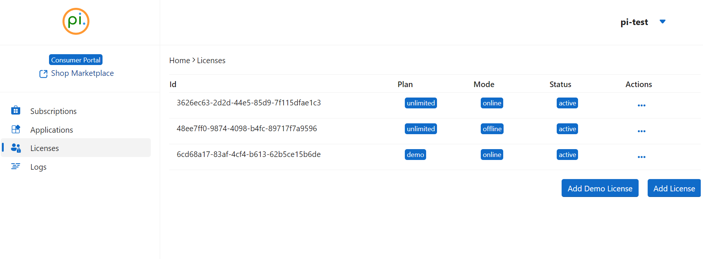

Usage
Authorize your terminal or application to use the OneImlx.Terminal framework by configuring the LicensingOptions.
To generate a new license, visit add new license.
Identifiers
Identifiers ensure your terminal or application is configured correctly.
- Visit our Consumer Portal.
- Login to your account.
- Navigate to the Licenses menu. 
- Select the license you wish to use.

- Copy the
ApplicationId. If you have multiple applications, select the appropriate one. - Scroll down to
Actionsand click theDownload Licensebutton. - Configure the
LicensingOptionswith your copied application identifier and the downloaded license file.
Specify the correct terminal license plan. Refer to TerminalLicensePlans for all available plans.
options.Id = <your_application_id>;
options.Licensing.LicenseFile = <your_license_file_path_local_or_remote>;
options.Licensing.LicensePlan = <your_terminal_license_plan>;
Example: The code below shows our test application using our internal demo license.
options.Id = TerminalIdentifiers.TestApplicationId;
options.Licensing.LicenseFile = "C:\\this\\perpetualintelligence\\tools\\lic\\oneimlx-terminal-demo-test.json";
options.Licensing.LicensePlan = TerminalLicensePlans.Demo;
For an offline license, particularly with the On-Premise or Unlimited license editions, the onpremise deployment option is available and may be used. This option is designed to facilitate the use of the OneImlx.Terminal framework in environments where internet connectivity is limited or secure internal deployments are required. Refer to @OneImlx.Terminal.TerminalIdentifiers.OnPremiseDeployment.
options.Licensing.Deployment = OneImlx.Terminal.TerminalIdentifiers.OnPremiseDeployment;